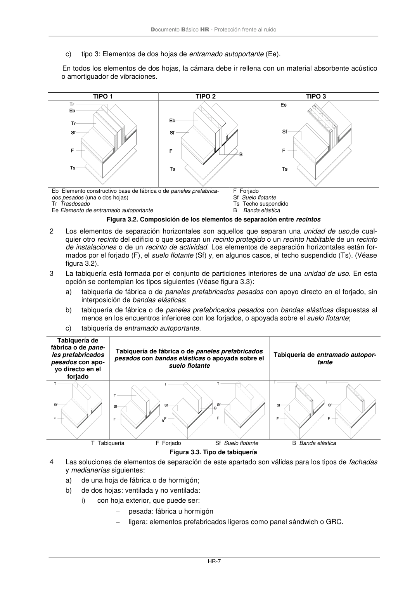

DB-HR Protección frente al ruido · edición 2019-12-20 · capa oficial
Documento DB-HR-oficial · SHA-256 del PDF a67baeca5138bb1f121f797d23a79a4557bd9ac4abacd954024893e05411eeab
Página física 13 de 80.
Copia fiel del PDF fuente · Fuente oficial
Ficha de la disposición en la fuente oficial
Formato: Texto de la página (Markdown)
Documento Básico HR - Protección frente al ruido
HR-7
c)
tipo 3: Elementos de dos hojas de entramado autoportante (Ee).
En todos los elementos de dos hojas, la cámara debe ir rellena con un material absorbente acústico
o amortiguador de vibraciones.
TIPO 1
TIPO 2
TIPO 3
Eb Elemento constructivo base de fábrica o de paneles prefabrica-
dos pesados (una o dos hojas)
Tr Trasdosado
Ee Elemento de entramado autoportante
F Forjado
Sf Suelo flotante
Ts Techo suspendido
B Banda elástica
Figura 3.2. Composición de los elementos de separación entre recintos
2
Los elementos de separación horizontales son aquellos que separan una unidad de uso,de cual-
quier otro recinto del edificio o que separan un recinto protegido o un recinto habitable de un recinto
de instalaciones o de un recinto de actividad. Los elementos de separación horizontales están for-
mados por el forjado (F), el suelo flotante (Sf) y, en algunos casos, el techo suspendido (Ts). (Véase
figura 3.2).
3
La tabiquería está formada por el conjunto de particiones interiores de una unidad de uso. En esta
opción se contemplan los tipos siguientes (Véase figura 3.3):
a)
tabiquería de fábrica o de paneles prefabricados pesados con apoyo directo en el forjado, sin
interposición de bandas elásticas;
b)
tabiquería de fábrica o de paneles prefabricados pesados con bandas elásticas dispuestas al
menos en los encuentros inferiores con los forjados, o apoyada sobre el suelo flotante;
c)
tabiquería de entramado autoportante.
Tabiquería de
fábrica o de pane-
les prefabricados
pesados con apo-
yo directo en el
forjado
Tabiquería de fábrica o de paneles prefabricados
pesados con bandas elásticas o apoyada sobre el
suelo flotante
Tabiquería de entramado autopor-
tante
T Tabiquería F Forjado Sf Suelo flotante B Banda elástica
Figura 3.3. Tipo de tabiquería
4
Las soluciones de elementos de separación de este apartado son válidas para los tipos de fachadas
y medianerías siguientes:
a)
de una hoja de fábrica o de hormigón;
b)
de dos hojas: ventilada y no ventilada:
i)
con hoja exterior, que puede ser:
−
pesada: fábrica u hormigón
−
ligera: elementos prefabricados ligeros como panel sándwich o GRC.

Datos candidatos: compruebe celdas y notas en el PDF.